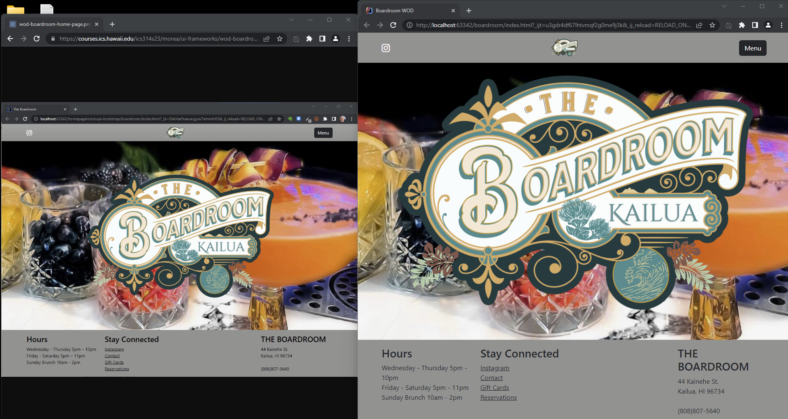

Bootstrap 5 is a package which allows the designer of a website to create dynamically sized and stylized web pages. The package consists of a variety of template-settings for types of sections that are frequently found on pages, like the now-common navigation bars at the tops of pages or the drop-down menus and their associated buttons. It also gives incredible support for common icons, like the triple line that represents most menu buttons or the icons for popular social media websites and applications that links you to either a specific profile associated with that website or to attach your own profile somehow to the website.
The complexity of using Bootstrap is significant, because you need to know what data these templates require and how and when to give it to them and sometimes even how they interact with each other. The long list of supported objects--called classes--makes it a daunting prospect to learn, and I've only shallowly interacted with it so far, but from what I've experienced it has been far easier to use it than to try to create these things myself; it invokes a satisfying not-"reinventing the wheel"-vibe when it actually all works out. It is here where Bootstrap can really shine since merely overriding the default behavior of these classes, like coloring or sizing or text-fonts, enables the designer to create uniqueness or parity as desired without all that leg-work.

The above image shows a reference photo of the original website that is being reproduced on the left with the reproduction on the right. When the actual HTML is inspected, one might find that there are a similar amount of lines but what would not be obvious is the difference in the amount of work I had to do as compared to the original designer. Inspection of the CSS style sheet, however, would show that I only added a few lines--which alters the expansive Bootstrap style sheet--whereas the style sheet that the original designer used must have been extensive and most likely the length of it is much closer to the Bootstrap package than to my style sheet.
In the context of being under a time-constrained assignment--like for a Workout-of-the-Day (WOD)--and considering my equally limited understanding of HTML and CSS, Bootstrap has enabled me a level of efficiency that I simply could not even imagine without it. The excellent documentation, again as compared to those for HTML and CSS, provides working examples that simply takes all the pain out of the construction of the page and their elements. I even learned a few things about plain HTML and CSS that I just wasn't understanding otherwise, by seeing how those tags and classes were used by Bootstrap, and feel like the whole experience gave me that invaluable insight into web pages that I had initially assumed I would get from learning HTML itself.
Certainly, every single WOD related to HTML and CSS and Bootstrap has once again been a humbling experience, to say the least, and has once again made me painfully aware of the limits of my knowledge. In reflection, although I had finished the homework assignments that were plain HTML and CSS, they were very simple pages and gave me a false sense of security so that when I wasn't able to finish the any of the bootstrap ones on-time I became worried and doubled my efforts. I may not have earned any points toward a grade but I am, however, glad that I continued to finish those assignments to pursue that understanding that I expected to learn and know and am closer to attaining.
If someone were to ask me whether I would recommend learning to use Bootstrap for creating web pages I would heartily agree. It is, for me, much more accessible with it's documentation and flexible enough to provide a level of functionality and customization to serve the needs of nearly every imaginable application. It's support for resizing based on visible area lends itself extremely well to producing web sites that are correctly portrayed on any type of display. Ultimately, there may be a certain heightened level of accomplishment via designing everything yourself but it personally felt pretty darn good for me to finish reproducing websites with the knowledge that I reduced a lot of that work. 5/5 Stars.